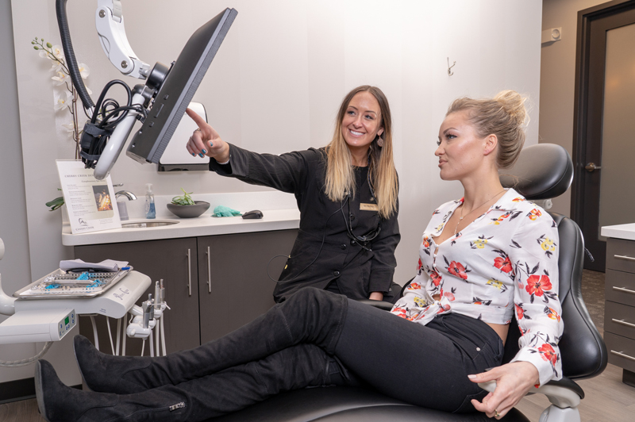

General Dentistry
The unglamorous, essential work that quietly keeps everything else easy.
- Cleanings & Exams
- Digital X-rays
- Fillings
- Emergency Care
- Nightguards
Cherry Creek Dental Spa is comprehensive dentistry, cosmetic smile design, and facial aesthetics — held inside a calm, hospitality-grade experience built for people who'd rather not dread the chair.

Now welcoming new patientsTrusted by Cherry CreekHundreds of five-star reviews for gentle, attentive care.

Most dental offices ask you to tolerate the visit so you can get to better health. We thought that bargain was outdated. Our team designed Cherry Creek Dental Spa around how you actually want to feel — calm, informed, and quietly impressed — while delivering the highest quality dentistry Denver has to offer.
Three doctors. One unhurried philosophy. Every plan tailored to you, explained without jargon, and supported by the kind of small comforts that turn a procedure into a pause in your day.
Unhurried visits. Care planned around your timeline, never the schedule's.
Plain-language plans. You'll know your options before you choose.
Modern, gentle tools. Quieter visits with less guesswork.
Hospitality first. The room is part of the treatment.
From your six-month cleaning to a full smile redesign — and everything in between, including Botox and dermal fillers performed by clinicians who already understand your face.
The unglamorous, essential work that quietly keeps everything else easy.
When the situation calls for more than maintenance — handled in-house, gently.
Quietly transformative work — never overdone, always made for your face.
Botox and dermal fillers performed by clinicians who already understand your face.
A surprising number of our patients arrive nervous and leave on a first-name basis with the team. The room is calm. The pace is yours. And we offer four levels of sedation so the procedure becomes the easy part.
“The relaxed atmosphere is exactly why I keep coming back — even with my needle anxiety, I feel completely at ease.”
— Rachel B., patient
The classic "laughing gas." Wears off before you reach the parking lot.
A single calming pill before your visit. You'll be aware, just delightfully unbothered.
Twilight comfort for longer or more involved appointments.
Available for complex cases by referral, with our coordinated planning.
Modern dentistry should feel like less — fewer impressions, fewer return visits, fewer surprises. Every tool we've invested in earns its keep by saving you time, discomfort, or both.
A digital scan, a milled porcelain crown, and a finished tooth — usually before you finish your podcast. No second visit, no temporary, no wait.
From scan to seated · ~90 minutesThree-dimensional clarity for implants and complex planning.
Up to 90% less radiation than film.
Catches early decay invisible to the eye.
Gentler gum work with faster healing.
Replaces gooey impressions with a quick, comfortable wand.
You see what we see — on a clear screen, in real time. So your treatment plan never feels like a leap of faith.
Patient-education firstEach of our doctors brings a distinct strength to the practice — and shares the same instinct for unhurried, attentive, painstakingly accurate care.
Known for an almost surgical attention to detail — and for noticing the small comforts that change how a visit feels.
Professional, dedicated, gentle, and accurate.” — Suzzette S.
Calm and precise, with a particular talent for putting first-time and anxious patients at ease before a single instrument is in view.
Walks you through everything before it happens.” — patient note
Brings a thoughtful, education-first approach — your treatment plan will always be explained twice if you'd like it to be.
Took the time to actually explain my options.” — patient note
Dr. Melissa is professional, dedicated, gentle, and incredibly accurate. The kind of care you'd recommend without hesitation.
The most relaxed atmosphere I've ever found at a dentist. As someone with serious needle anxiety, that changes everything.
Beautiful office, lovely amenities, and Dr. Goodpaster's attention to detail is unmatched. Whole team is wonderful.
We accept many major plans, file your claims for you, and work to maximise the benefits you've already paid for. Same with scheduling — book online any hour of the day, or let our team find the appointment that actually fits your week.
You don't chase forms. We submit, follow up, and keep you posted.
We help time treatment so your annual benefits work harder for you.
Estimates before treatment. No surprises after.
We'd rather you experience the room than read about it. Schedule online any hour, or call during the day and a real person will answer.